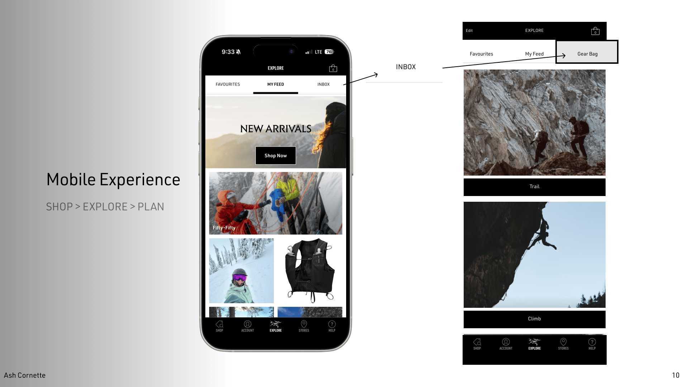

Arc'teryx Gear Bag
turning a dead-end favourite into a planning tool
Arc'teryx is built on obsessive precision in-store. Walk into the Vancouver flagship and a staff member will ask what you're doing — alpine day, ski tour, climbing — and build a layering recommendation around the answer. That's the brand experience.
The app skips the question. You favourite a product. A modal pops up: "Has been successfully added to your favourites." One CTA: View Favourites. You go to a generic pile and the trail ends.
That observation became the hinge of the entire redesign. Everything else followed from it.
Problem statement: Arc'teryx's in-store experience is built around activity-specific layering systems, but the app treats every save as a generic favourite — wasting the highest-intent moment in the funnel and giving people no reason to return between purchases.
How might we…
- give online shoppers the same activity context an in-store associate provides?
- turn an infrequently-opened app into a planning tool people open between trips?
- reframe the favourite modal as a beginning instead of an end?
Mapping the gap
I compared the Arc'teryx app to five competitors in the premium outdoor space — Patagonia, The North Face, MEC, Salomon, and Kuiu — to understand the feature landscape and where the real gap lived. The picture was lopsided.
Three problems came up everywhere
Across review threads and forum posts, the same complaints surfaced:
- Navigation feels like a website wedged into a phone, not built for mobile.
- Sizing varies by activity and layer system, but the size chart doesn't reflect that.
- Outlet, ReGEAR, and the main store live in three separate places.
The middle of nowhere
Arc'teryx as a brand layers context. Brand → activity → kit → product. Each layer gives meaning to the one inside it. The app skips straight to the middle. A favourite without an activity context, without a bag, without a connection to the system it lives in.
From observation to move
The key move
The redesign rests on one decision. Replace the dead-end favourites CTA with three activity-specific CTAs. View Favourites stays. Add to Trail, Add to Climb, and Add to Ski & Snowboard join it.
Same modal. Same product. Same heart tap. But the next surface is no longer a generic pile — it's a planning bag for a specific trip.
The journey
Five beats from product page to packed bag.
Three bags, one hinge
The modal
The central design move is right here. One modal, before and after.

Three new CTAs, sorted by activity. Tap one and the product joins that gear bag — you've started planning a trip without realising you started.
The gear bag
Each CTA routes into a bag the user can review before a trip. The bag lives one tap away inside the Explore tab — alongside Favourites and My Feed, which stay where they are.

See it in motion
The whole point is the loop, so here it is — click through the live prototype, from the heart-tap to a filled gear bag.
interactive prototype — tap through it (heart-tap → activity CTA → gear bag)
Before / after
What this would unlock
- A wasted high-intent moment converted into a planning action, with no extra taps.
- An infrequently-opened app given a reason to be opened between purchases — checking the trail bag before a trip, organizing the climb bag for the season.
- Cross-sell reframed quietly. Users aren't shown more things to buy. They're shown what's missing from their bag.
What's next, what I'd change
Next steps
- User research interviews with outdoor enthusiasts at three commitment levels — casual, intermediate, alpine.
- Usability testing on the redesigned modal flow specifically.
- "Create Custom Bag" for trip-specific lists that fall outside the three default activities.
- Hi-fi prototype with real product imagery, not placeholders.
- Kit total + "Add All to Cart" from inside the gear bag.
- Heuristic evaluation: current app vs redesign, side by side.
The assumption risk
The redesign rests on one observation about the favourite modal. That's a strong wedge but also a risky one — if the modal isn't actually the highest-intent moment for most users, the whole concept loses its grounding. A diary study with 5–8 outdoor enthusiasts would test the assumption directly: where do people hesitate, where do they save, where do they bail.
The taxonomy question
Trail / Climb / Ski & Snowboard maps to Arc'teryx's marketing categories, but real users build mixed kits — a hike that ends at a crag, a ski tour that starts with an approach. The "Create Custom Bag" stretch goal exists for that reason, but it should probably be a Day 1 feature, not a Day 2 one.
What this taught me
The strongest design moves aren't always new features. Sometimes the right move is finding a moment the system is already creating and giving it somewhere to go. The favourite modal already existed. The heart tap already existed. Activity-specific kit-building was already happening in-store. The work was identifying the gap between them — and closing it with as few new pieces as possible.